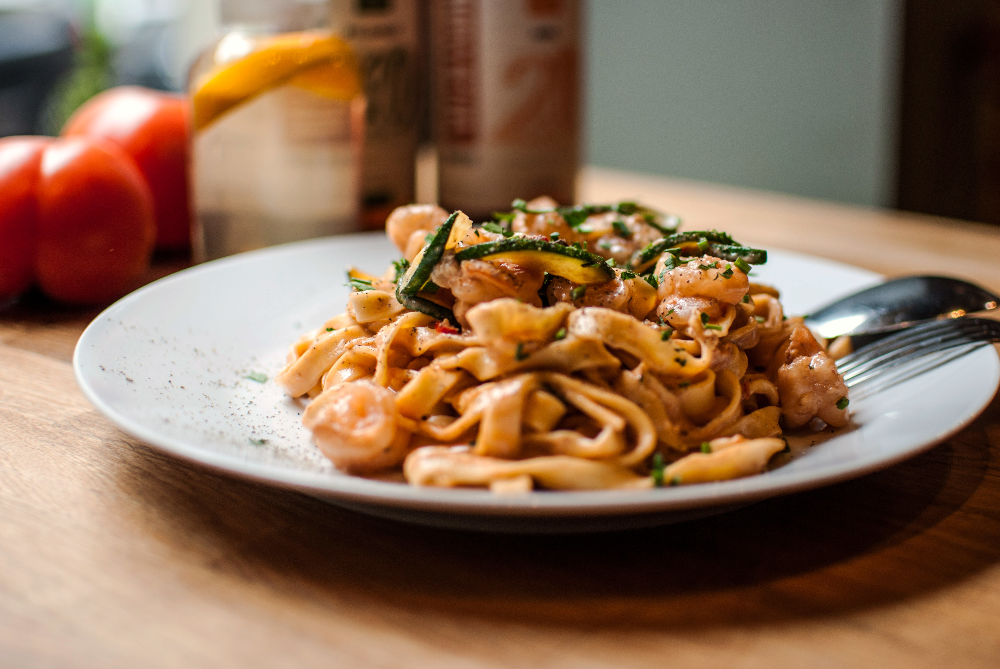

Meixin Chinese Restaurant
1. BELL NACHO CHEESE DORITOS LOCOS TACOS SUPREME
""A delicious noodle dish with chicken and shrimp and the trademark curry flavor. You can get the fried shallots you need in this recipe in little jars at the Asian markets. They sell fried garlic as well.""

2. CHANG'S SINGAPORE STREET NOODLES
"The first time I didn't have Madras curry so I used 1 Tbsp of regular curry. It was still really good. The second time I had bought the Madras curry and I used the 2 Tbsp as written."

3. DAN DAN NOODLES (PF CHANG STYLE)
"Original recipe comes from Todd Wilbur's book "Top Secret Restaurant Recipes" however I've made some minor changes to fit personal taste. For something different substitute leftover pork roast. Please note that we like spicy food so you may wish to adjust the amount sambal oelek you use."